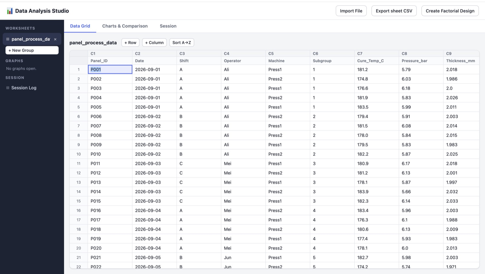
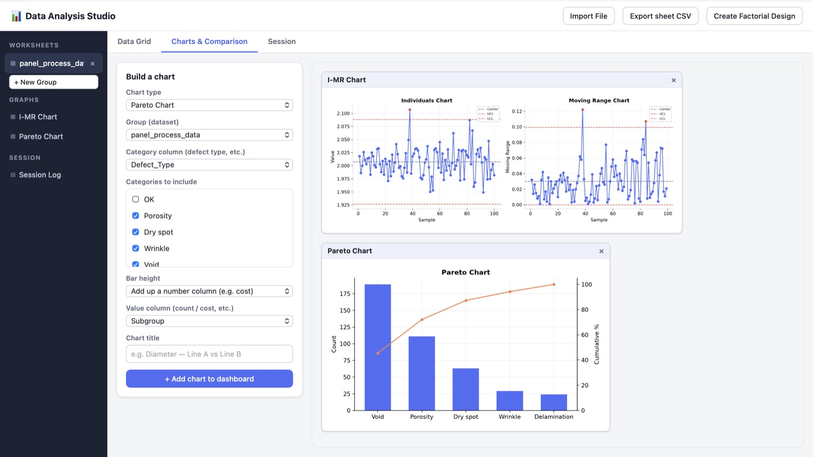
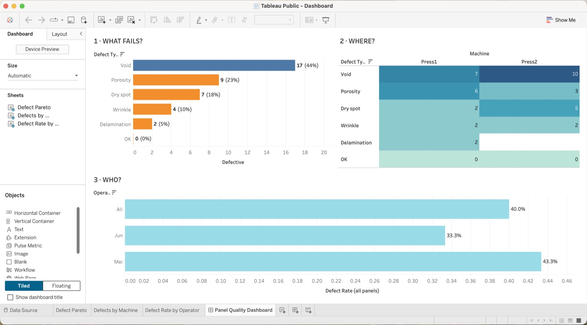
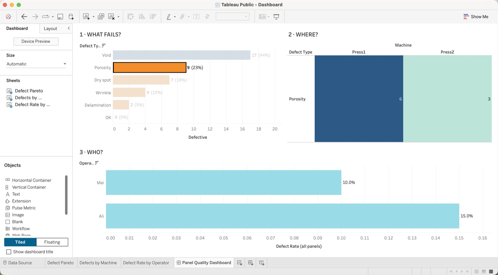
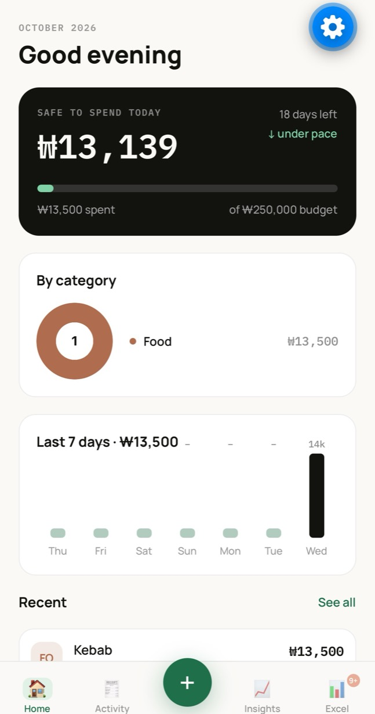
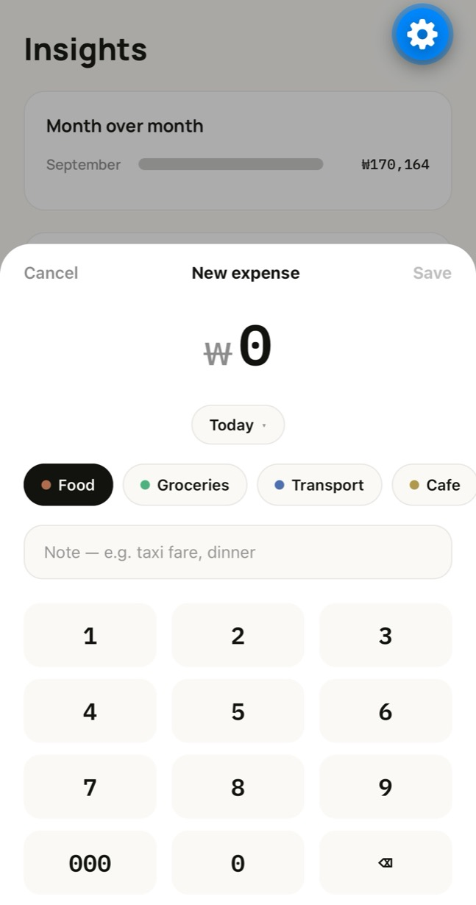
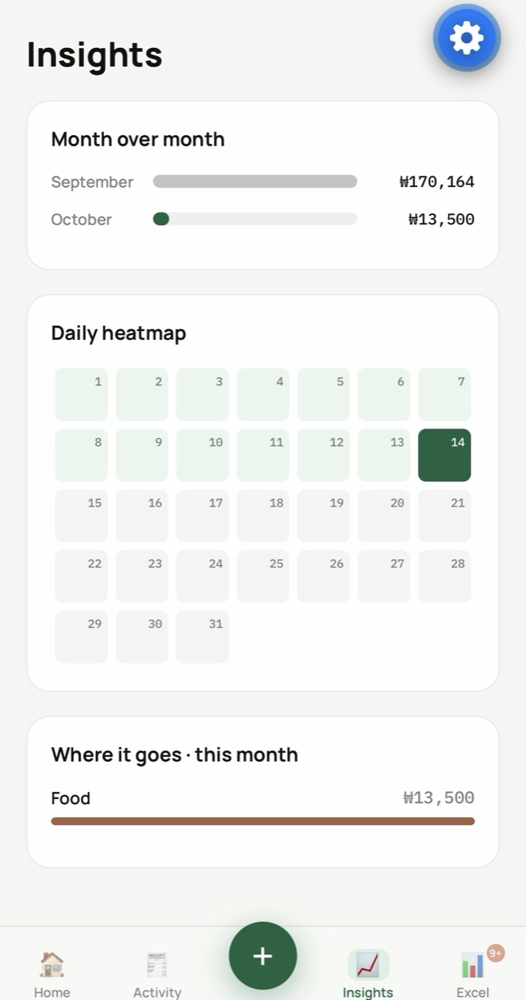
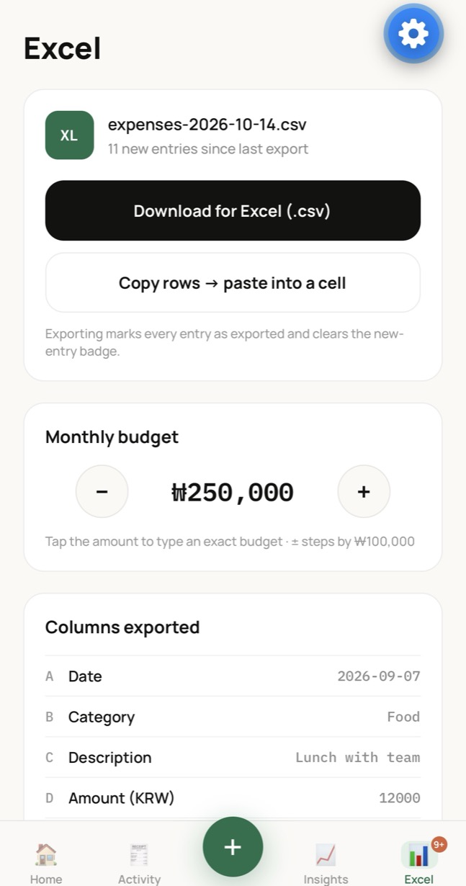
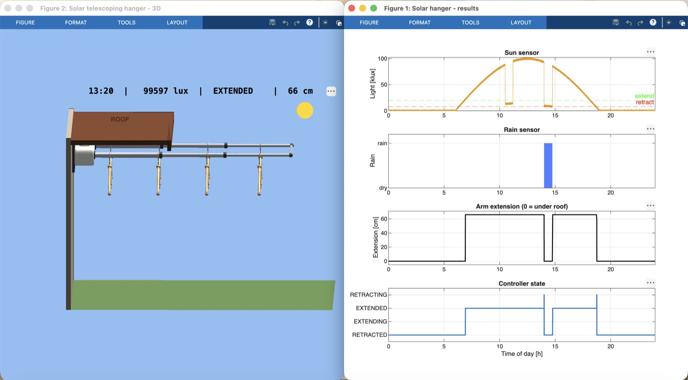
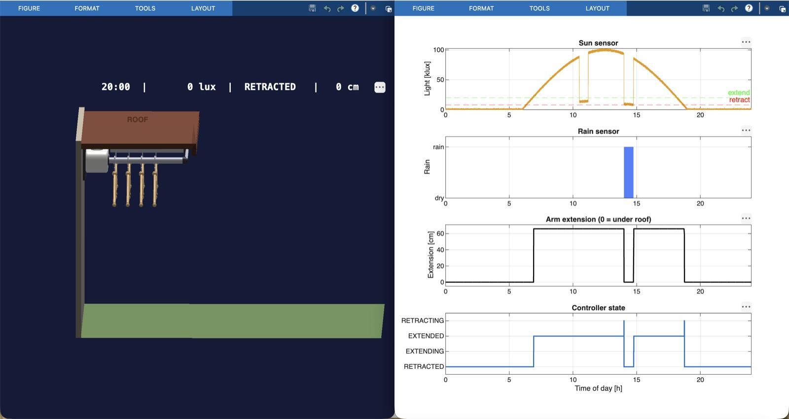

Mechanical engineering student at Hanyang University ERICA, working on quality engineering and data analysis. I turn inspection data into charts and reports people can act on, and I build the software to do it.
A Minitab-style statistics app for manufacturing quality data. It does control charts, process capability, hypothesis tests and design of experiments, all without paying for commercial statistical software.
It has an Excel-like grid that stays smooth at tens of thousands of rows, and you can paste straight in from Excel or import a CSV. From there you build charts: I-MR, Xbar-R and Xbar-S control charts, Pareto, capability histograms with Cp/Cpk/Pp/Ppk, a full Process Capability Sixpack and Gauge R&R.
The statistics (t-tests, ANOVA, regression, correlation, normality and 2-level factorial DOE) are hand-written on numpy and pandas, including the p-value maths. Each result opens in its own floating graph window, the way Minitab does.


One dashboard that answers three questions about composite panel defects: what fails, where it fails and who was running the line.
Using the same panel dataset, a Pareto shows that voids and porosity cause two thirds of all defects. A heatmap breaks each defect type down by press, and a bar chart compares defect rates across operators.
Clicking any defect type filters the whole dashboard. For example, selecting porosity shows that it's concentrated on Press 1.


A daily expense tracker in Korean won that runs entirely on your phone. There's no account and no server, and it can export a clean CSV for Excel whenever you need one.
Logging an expense takes a few taps: amount keypad, category and an optional note. Data is stored on the device, and every record is validated when the app loads, so an old or corrupted entry is repaired instead of crashing the app.
The CSV export is safe for Korean text and opens cleanly in Excel. You can also copy tab-separated rows straight into a spreadsheet.




A wall-mounted clothes hanger with two telescoping arms. A sun sensor decides when to push the laundry out into the sun and when to pull it back in for darkness or rain.
The controller is a four-state machine (retracted, extending, extended, retracting). It uses hysteresis so the arms don't chatter at dawn: they extend above 20,000 lux and retract below 8,000 lux. Each condition has to hold for 60 seconds before anything moves. Rain overrides everything and brings the arms in immediately.
I modelled and simulated the full day in MATLAB, with sensor, extension and state plots alongside a 3D animation of the mechanism.


I'm Danial, a Malaysian mechanical engineering student at Hanyang University ERICA in Ansan, South Korea. I like the part of engineering where measurements turn into decisions.
In my quality engineering internship at CTRM Aero Composites, I built a Power BI system that replaced manual quality reporting and set up control charts that flagged out-of-tolerance inspection results.
Everything on this page is self-study: projects I built in my own time to teach myself software and data skills. Data Analysis Studio is my main project. The others are smaller side projects.
I'm looking for an entry-level role in quality engineering or data analysis.